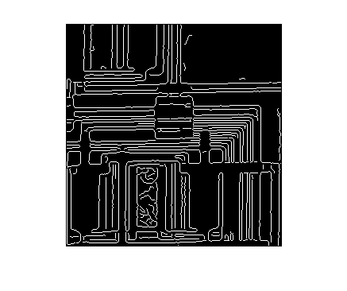
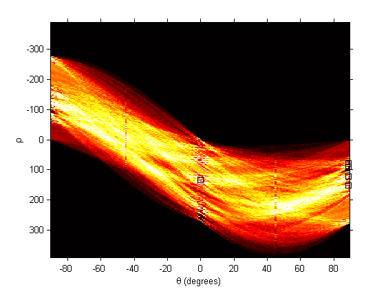
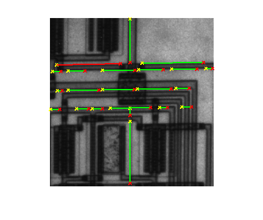

Contents
Leer la imagen
I = imread('circuit.tif');
Detectar contornos
BW = edge(I,'canny');
figure, imshow(BW);

Calcular la transformada de Hough y visualizar el acumulador
% La funcion hough permite especificar dos parametros % [H, theta, rho] = hough(BW, ParameterName, ParameterValue) % donde: % ParemeterName ParameterValue % 'RhoResolution' Es un valor entre 0 y el tamaño de la diagonal de la % imagen, que especifica la cuanficacion del parametro % rho. Por defecto vale 1 % 'Theta' Es un vector que especifica el conjunto de posibles % valores de theta. El rango de posibles valores % -90 <= theta < 90 [H,theta,rho] = hough(BW); % H es el acumulador. Cada fila representa un posible valor de rho y cada % columna un posible valor de theta. % theta y rho son vectores con todos los posibles valores de theta y rho % empleados % visualizacion del acumulador figure, imshow(imadjust(mat2gray(H)),[],'XData',theta,'YData',rho,... 'InitialMagnification','fit'); xlabel('\theta (degrees)'), ylabel('\rho'); axis on, axis normal, hold on; colormap(hot)
Busqueda de picos
% Identifica picos en el acumulador. Ademas del acumulador y el numero de % picos que se desean encontrar, podemos pasarle otros dos parámetros: % peaks = houghpeaks(H, numpeaks, param1, val1, param2, val2) % param val % 'threshold' escalar positivo que especifica el umbral minimo para que % considere un pico. Por defecto es el 50% del maximo del % acumulador % 'NHoodSize' Un vector de dos enteros impares que indican el tamaño de % la ventana de supresion tras localizar un pico. Por defecto % son los menores impares mayores o iguales que las % dimensiones del acumulador dividas por 50. P = houghpeaks(H,5,'threshold',ceil(0.3*max(H(:)))); % el resultado es una matriz con dos columnas que indican la fila y la % columna del pico. Las filas corresponden con los valores de rho y las % columnas con los valores de theta x = theta(P(:,2)); y = rho(P(:,1)); plot(x,y,'s','color','black');

Obtención de los puntos que pertenecen a la linea
% houghlines permite obtener los segmentos de puntos de la imagen asociados % con una celda del acumulador. theta y rho son los valores devueltos por % la funcion hough y P son las posiciones de las celdas que queremos % analizar (normalmente los valores devueltos por peaks) % La función admite dos parametros adicionales: % param val % 'FillGap' real positivo que especifica la distancia entre dos segmenos % asociados con una misma celda del acumulador. Si la distancia % es menor a la indicada (por defecto 20), la función fusiona los % dos trozos en un mismo segmento. % 'MinLength' real positivo que especifica cuando los segmentos % fusionados deben descartarse o no. Si la linea es mas corta % del valor especificado (por defecto 40), la linea se % descarta. lines = houghlines(BW,theta,rho,P,'FillGap',5,'MinLength',7); % lines es un array de estructuras con los siguientes campos: % .point1 -> vector [x y] que especifica las coordenadas de un extremo del % segmento % .point2 -> vector [x y] que especifica las coordenadas del otro % extremo % theta -> valor del angulo (en grados) % rho -> valor de la distancia al origen. % dibujar los segmentos sobre la imagen figure, imshow(I), hold on max_len = 0; for k = 1:length(lines) % matriz en la que cada fila es un segmento xy = [lines(k).point1; lines(k).point2]; % dibujar el segmento plot(xy(:,1),xy(:,2),'LineWidth',2,'Color','green'); % Marcar el comienzo y el final del segmento plot(xy(1,1),xy(1,2),'x','LineWidth',2,'Color','yellow'); plot(xy(2,1),xy(2,2),'x','LineWidth',2,'Color','red'); % Buscar el segmento mas largo len = norm(lines(k).point1 - lines(k).point2); if ( len > max_len) max_len = len; xy_long = xy; end end % Dibujar el segmento mas largo en otro color plot(xy_long(:,1),xy_long(:,2),'LineWidth',2,'Color','red');
